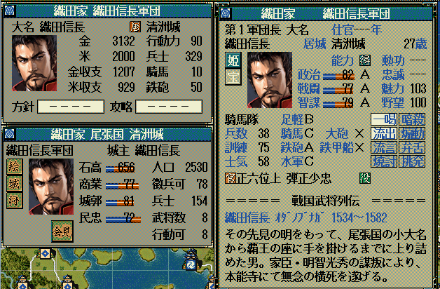

このフォントは天翔記のPC98版が発売された当初のフォントに限りなく近いものとなっています。
16ドットピクセルの部分だけは、NEC PC98 フォントのビットマップであり、その他は、｢ＭＳ ゴシック｣がベースとなっています。
全体に対するフォントの雰囲気は下記のようになります。

インストール方法は、通常のフォントと同じです。｢tspc98.ttf｣ファイルを｢C:\WINDOWS\Fonts｣フォルダにペーストすると、自動的にインストールされます。
その他の、解説は、｢天翔 明朝｣の解説と同じとなります。｢天翔 明朝｣を｢天翔 PC98｣と読み替えてください。